한국영화박물관
한국영화의 모든 것을 보고 느낄 수 있는 보물창고
영화 출판과 읽기의 연대기, 1980년 이후
영화문고
기간 | 2024.11.08.(금) ~ 03.31.(토)
장소 | 기획전시실
영화문고 - 영화 출판과 읽기의 연대기, 1980년 이후
Film Bookshop - A Chronicle of Film Book Publishing and Reading since1980
당신은 어떤 영화 책을 읽어 왔는가?
야심 넘치는 영화 창작자든, 출중한 통찰을 지닌 영화평론가든, 영화 세계에서 위안을 찾는 관객이든, 우리는 저마다의 시각으로 영화 책을 읽어 왔다. 책 읽기만큼 내밀한 취향과 정체성을 반영하는 행위도 없을 것이다. 따라서 어떤 영화 책을 읽어 왔느냐는 질문에 대한 응답은 독자 혹은 영화 관객들의 ‘영화를 향한 욕망의 지도’를 그리는 한 방법이 된다.
전시 ‘영화문고’는 ‘영화문화의 반영으로서의 영화 책’을 탐구한다. 한국에서 영화 출판은 지난 세기부터 이어진 영화문화의 격변과 흐름을 공유하고, 애호가 현상의 다발적인 징후라는 관점에서 전통적인 출판 관행을 넘어서서 이루어져 왔다. 이와 같은 변혁기에 나타날 수 있는 실천의 맥락에서 영화 출판은 당대 영화문화의 동향이나 영화의 유행 경향에 따라 변화와 부침을 겪었다고 할 수 있다. 요컨대 출판이 문화와 트렌드를 이끌었다기보다 문화와 트렌드가 출판을 견인한 쪽에 가깝다.
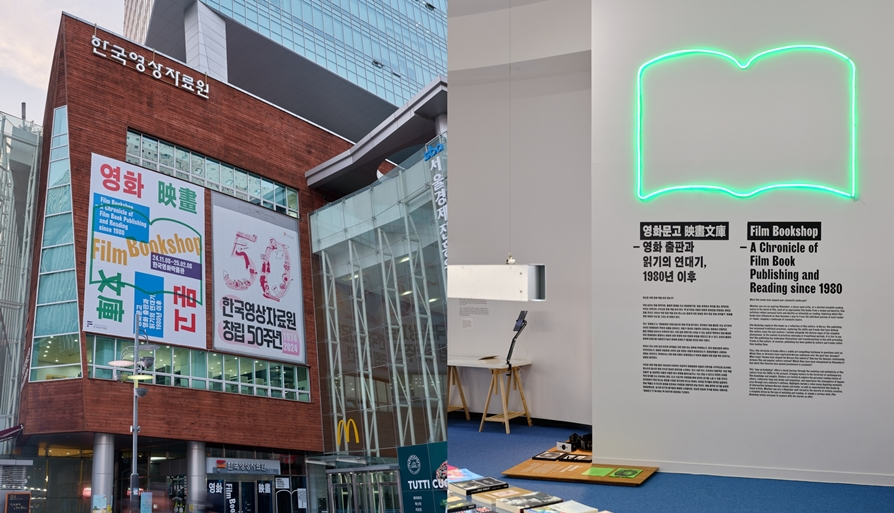
따라서 지난 40여 년간 한국의 관객들은 어떤 영화 또는 감독에 주목했는가, 한국 영화산업의 화두는 무엇이었는가, 영화와 대중문화 사이의 상호 관계는 어떻게 형성되었는가, 영화감독들이 사랑하는 영화는 무엇인가, 학계에서는 어떤 영화 이론이 유행하였는가 따위의 물음에 대한 답을 책의 연대기는 담담히 증언한다.
이곳은 영화 책을 통해 1980년대 이후부터 지금까지 영화문화의 흐름과 다면성을 시각적으로 묘사하는 장소이자 동시대 영화 지식과 정보의 최전선을 소개하는 ‘임시 서점’이다.
이곳에서 관람객은 ‘어떤 책을 읽을까’ 늘 궁금했던 이들의 내밀한 독서 취향을 들여다보거나, 더는 만날 수 없다고 여겼던 오래된 책과 잡지를 다시 조우하는 한편, 도서 수집가의 귀중본을 통해 당대의 공기를 느낄 수 있을 것이다. 한국영화가 책과 만나는 장면을 수집해 재구성한 비디오 에세이, 비주얼 작가들이 창작한 실험적인 영화 책들도 이 전시의 초점을 강조하는 악센트로 관람객과 만날 것이다.
예술 창작의 비기를 습득한 영화감독이든, 보기와 읽기의 즐거움에 매료된 시네필이든, 단순한 정보와 지식을 원하는 대중이든, ‘영화문고’가 제시하는 책 이야기에 공감하길 기대한다.
이런 책을 읽어왔다 1980년 이후의 영화책
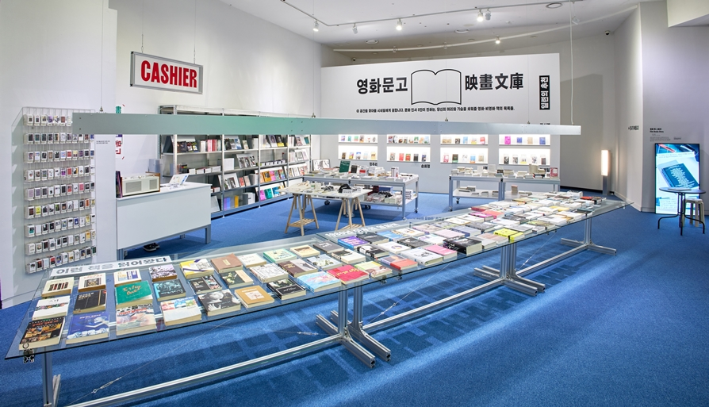
세기말 세기 초 대중문화 지형에서 영화의 급부상과 담론의 폭발, 산업의 르네상스, 자신의 뿌리를 찾으려는 정체성 모색기를 지나 오늘날 영화를 소재로 한 책들은 훨씬 다양해졌으며 다른 분야와 적극적으로 교류하고 접속한다. 지금은 영화가 특정 분야의 경계를 넘어 시각문화의 복합 산물로서 다뤄지는 시대이기 때문이다. 연대기적인 행로를 따라 영화 저술과 출판의 역사를 일별하는 작업은 따라서 현대적인 시각문화의 총아인 영화에 대해 한국의 대중들이 투사해온 기호와 욕망의 지도를 그릴 수 있는 틀을 제공한다. 영화서적이 영화팬 및 연구자의 지적 욕구와 관련이 있다는 측면에서 대중의 문화 욕구와 호기심, 영화문화의 변천은 본 섹션에서 소개하는 99권의 책에 새겨져 있다.
일련의 추천
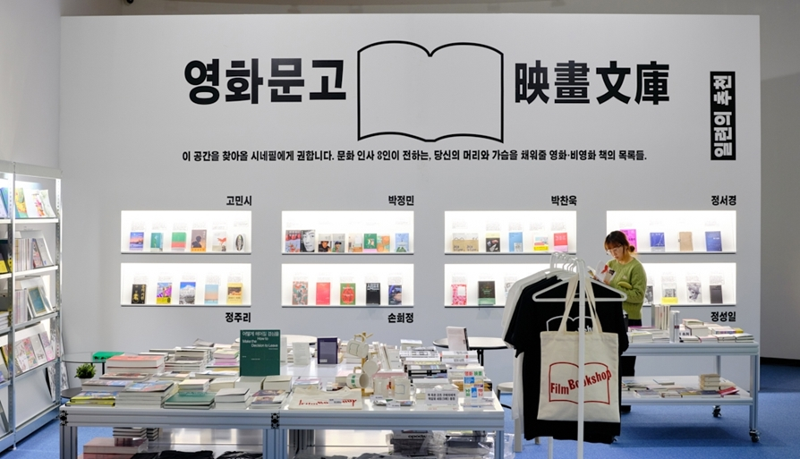
감독 박찬욱 정주리, 배우 고민시 박정민, 작가 김중혁 정서경, 평론가 손희정 정성일. 문화 인사 8인이 추천하는 영화 및 비영화 도서를 전시한다.
힘들 때마다 들춰 보기도, 너덜너덜할 정도로 절박하게 읽었던 책들과 왜 이제야 읽게 되었을까 뒤늦은 발견이 기쁨이 되는 책들까지, 전시를 찾은 관람객들의 머리와 가슴을 채워줄 책들을 만나볼 수 있다.
잡지가 중요했다
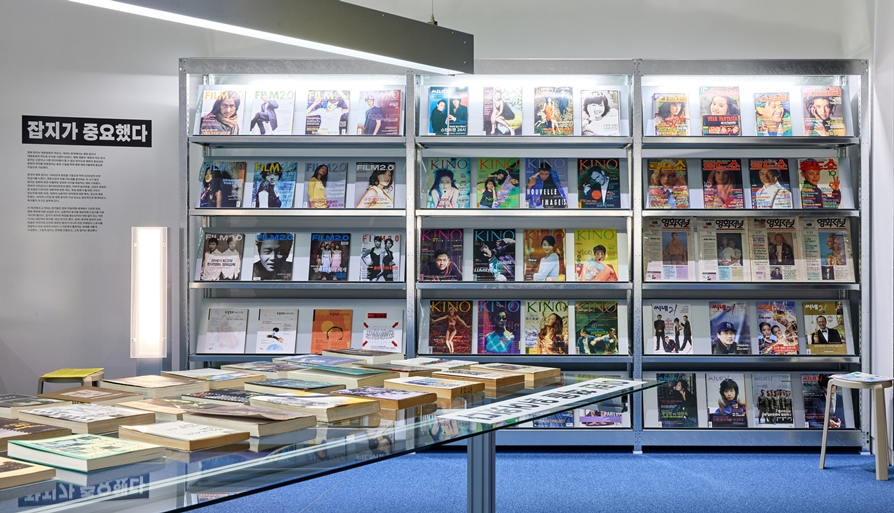
영화 잡지는 영화문화의 척도다. 적어도 한국에서는 영화 잡지가 대중문화의 척도로 인식된 시절이 있었다. 영화 대중의 ‘욕망의 지도’로서 잡지는 신문이나 다른 미디어들이 할 수 없는 방식으로 영화의 중요성과 문화적 의미를 뒷받침하는 원료 구실을 하며 영화 애호가들에게 중요한 지침으로 기능했다.
한국의 영화 잡지는 1990년대 중반을 기점으로 하여 2000년대 초반 전성기를 누렸다. 영화산업의 부흥기와 때를 같이하는 이 시기 동안 잡지는 영화에 관한 차별화된 정보와 시각을 제공하는 데에 기여했다. 정보의 시의성이나 엔터테인먼트의 흥미, 리뷰의 날카로움, 산업의 영향력 등 초점은 다르지만 개봉작에 관한 개요, 특정 영화가 볼 만한 가치가 있는지에 대한 의견, 영화의 심층적인 의미망에 대한 해석, 최신의 영화 트렌드, 라이프스타일 등 영화 잡지의 구성 요소는 점진적으로 확대되었고 독자들의 요구도 분화해 갔다.
이 섹션에서 소개되는 잡지들은 영화 저널리즘 세계에서 고유한 관점, 영화 제작에 대한 성실한 조사, 심층적인 분석을 제공하면서 일가를 이룬 ‘미디어’들이다. 잡지가 독자의 욕망을 좇는다지만 어떤 잡지 또는 어떤 기사는 대안적인 독자를 ‘생산’하기도 했다. 관객–독자와 잡지의 상호 작용은 이미지와 단어로 채워진 종이가 아니라 모든 프레임이 스토리를 전달하고 모든 감독의 비전이 스크린에서 펼쳐지는 세계를 새롭게 구성했다. 그렇게 잡지는 문화를 만들었고, 고로 잡지는 중요했다.
망점들 Dots
프론트도어, 디지털 프린트, 198 x 280mm, 90p, 2024
비디오, 8분, 2024(연출: 와우산지킴이)
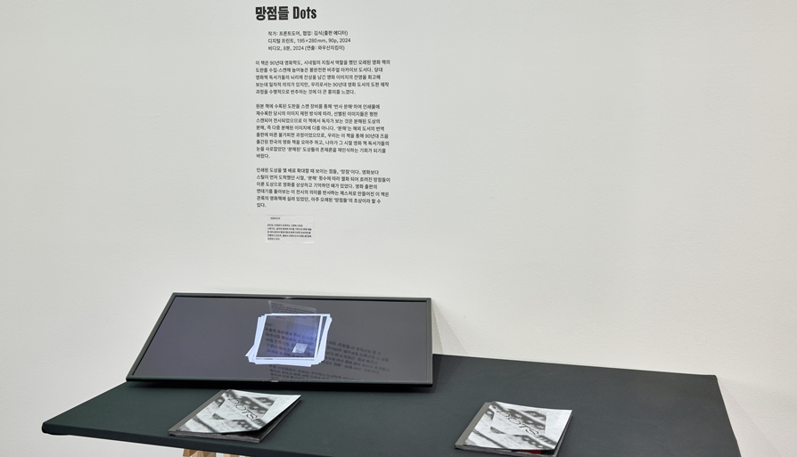
90년대 영화학도, 시네필의 지침서 역할을 했던 오래된 영화책의 도판을 수집, 스캔해 늘어놓은 불완전한 비주얼 아카이브 도서다. 당대 영화책 독서가들의 뇌리에 잔상을 남긴 영화 이미지의 잔영을 회고해 보는 데 일차적 의의가 있지만, 우리로서는 90년대 영화 도서의 도판 제작 과정을 수행적으로 반추하는 것에 더 큰 흥미를 느꼈다.
원본 책에 수록된 도판을 스캔 장비를 통해 '반사 분해'하여 인쇄물에 재수록한 당시의 이미지 재현 방식에 따라, 선별된 이미지들은 평판 스캔되어 전사되었으므로 이 책에서 독자가 보는 것은 분해된 도상의 분해, 즉 다중 분해된 이미지에 다름 아니다. '분해'는 해외 도서의 번역 출판에 따른 불가피한 과정이었으므로, 우리는 이 책을 통해 90년대 즈음 출간된 한국의 영화책을 오마주하고, 나아가 그 시절 영화책 독서가들의 눈을 사로잡았던 '분해된' 도상들의 존재론을 재인식하는 기회가 되기를 바랐다.
인쇄된 도상을 몇 배로 확대할 때 보이는 점들, '망점'이다. 영화보다 스틸이 먼저 도착했던 시절, '분해' 횟수에 따라 열화되어 흐려진 망점들이 이룬 도상으로 영화를 상상하고 기억하던 때가 있었다. 영화 출판의 연대기를 돌아보는 이 전시의 의미를 반사하는 제스처로 만들어진 이 책은 관록의 영화책에 실려 있었던, 아주 오래된 '망점들'의 초상이라 할 수 있다.
쿠아론의 패닝 Cuaron's Panning
배민기(제작 협업: 김명수(북 아티스트)
디지털 프린트, 188 x 80mm, 6p, 2권 1세트, 2024
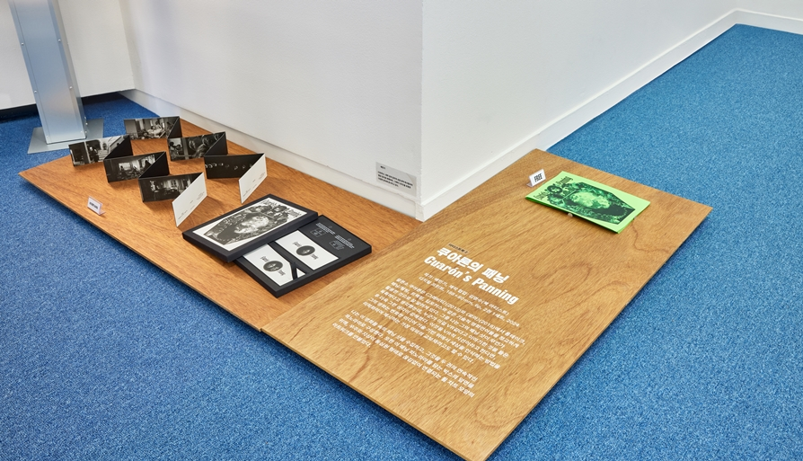
알폰소 쿠아론은 <그래비티>(2013)와 <로마>(2018)에서 롱테이크, 패닝/틸팅, 트랙킹, 딥포커스와 같은 기술적 영화언어들을 정교하게 활용한 것으로 잘 알려져 있다. 그중 하는 그의 패닝 숏이 무언가 독특하다고 생각했는데, 누군가 이걸 VR 같다고 이야기한 것을 들은 후 더욱 그런 생각이 강해졌다. 이것을 VR적 시선이라고 한다면, 그의 영화는 변화한 미디어 기술 기반 위에서 세상을 인식하는 방법을 미학화하여 제시하는 가장 의외의 교보재라고도 할 수 있다.
나는 이 영화들 속의 패닝 숏을 수집하고, 그것을 두 권의 연속적인 파노라마로 구성했다. 또한 이 패닝 파노라마를 담는 박수의 앞면을 위해, 우주와 지상이 동심원 형태로 끊김 없이 연결되는 휠 차트 모양의 아트워크를 만들었다.
핸들-북 클래식(책) Handle-book Classics
핸들-북 클래식 읽기(영상)
신신(촬영: 박성수)
디지털 프린트, 120 x 240mm, 600p, 2권 1세트, 2024
비디오, 1920 x 1080px, 60초, 2024
영화에서 자동차 운전 장면은 다종다양하게 등장한다. 핸들을 자유자재로 돌려가며 곡예에 가까운 운전을 선보이는 폭주 장면이 등장하기도 하고, 말다툼으로 인해 갑작스럽게 꺾인 핸들은 주인공들이 원래 향하던 길의 반대로 차를 돌려 그들의 이야기 역시 다른 방향으로 펼쳐질 것을 암시하기도 한다.
우리는 이 전시를 위해 책 두 권에 한국 고전영화 속 운전 장면을 수집해 담았다. 한 권에는 영화 속 운전하는 다양한 인물의 손과 핸들 그리고 창밖 풍경을, 다른 한 권에는 대사와 방향을 모았다. 책을 읽는 행위를 운전하는 행위로 간주하여, 페이지가 순차적으로 펼쳐지며 앞으로 나아가는 동력에 새로운 방향성을 제시한다.
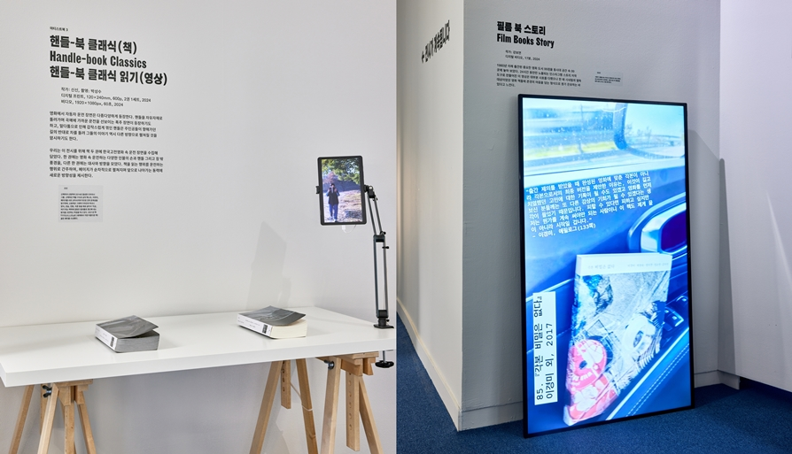
필름 북 스토리 Film Books Story
강보연
디지털 비디오, 17분, 2024
1980년 이래 출간된 중요한 영화 도서 99권을 동시대 공간 속 99곳에 놓아 보았다. 24시간 동안만 노출되는 인스타그램 스토리 저작 도구로 만들어진 이 영상은 대부분 시효를 다했으나 한 때 시네필의 열독 대상이었던 영화 책들에 존경의 마음을 담는 형식으로 뭔가 은유하는 바 있다고 느낀다.
군상 Ensemble
정사록
디지털 프린트, 170 x 240mm, 510p, 2024
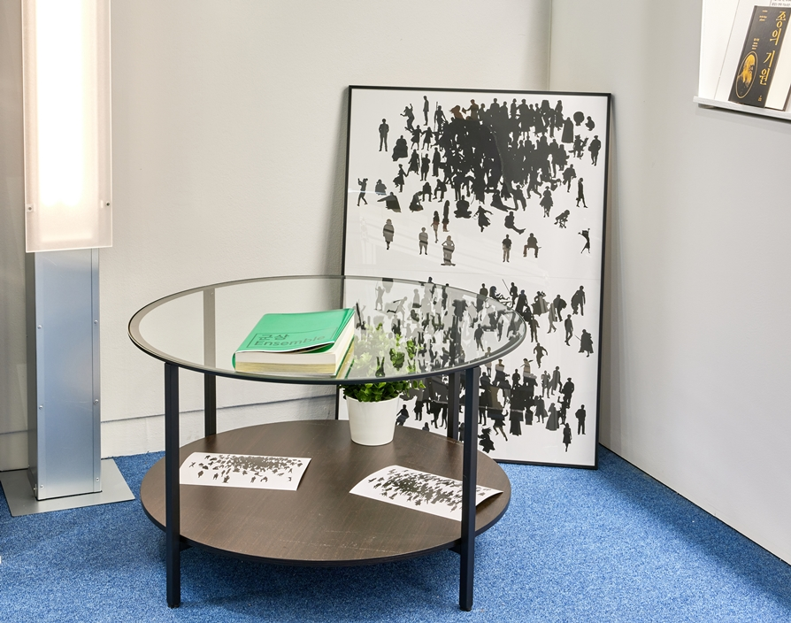
국내외 군상극(Ensemble Cast) 50편에 등장하는 인물의 실루엣을 모았다. 군상극은 사건에 대해 여러 인물이 처한 상황을 보여주어 관객에게 다양한 시점에서 상황을 이해하도록 돕는다. 극 속에서 이들은 함께 힘을 모아 문제를 해결하거나, 위기를 버텨내고, 각자의 모습으로 살아간다. 영화 속 장면에서 형태의 외곽선을 따라 인물을 평면화시켜 삶의 파편상을 표현해 보았다.
90년대 영화출판
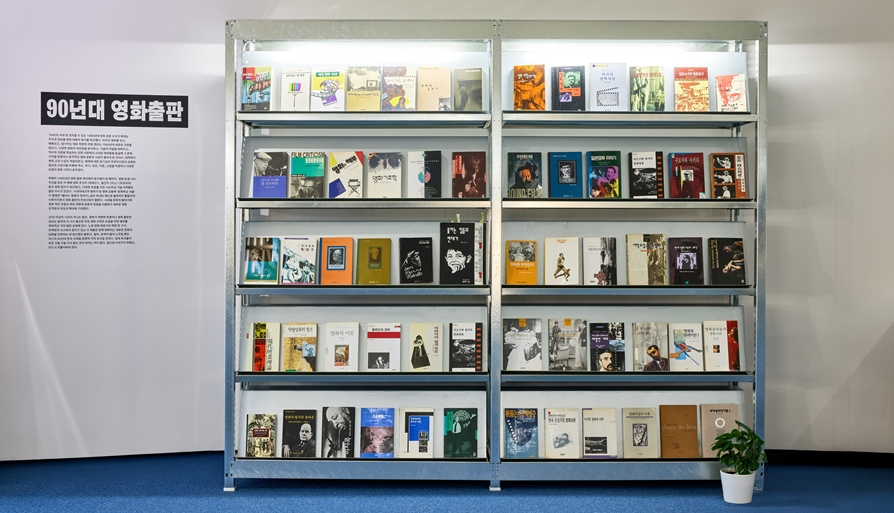
VHS의 시대로 정의할 수 있는 1980년대 영화 관람 수단의 확대는 지식과 정보를 향한 대중의 욕구를 촉진했다. 미지의 영화를 보고, 매혹되고, 탐구하는 애호 취향의 진화 경로는 1990년대 새로운 국면을 맞는다. 다양한 영화의 의미망을 분석하고, 기술적 비밀을 파헤치고, 역사와 이론을 학습하는 한편 시장에서 소외된 영화들을 발굴해 그 존재 가치를 변론하는 본격적인 영화 담론의 시대가 열리게 된 것이다. 대학마다 영화 교양 수업이 개설되었고, 매체에 대한 호기심이 무르익으면서 교육에 필요한 교양서를 비롯해 역사, 작가, 장르, 이론, 산업을 막론하고 다양한 유형의 영화 서적이 쏟아졌다.
특별히 1995년은 영화 출판 역사에서 분수령이 된 해이다. 영화 탄생 100주년을 맞은 이 해에 영화 주간지 씨네21, 월간지 키노, 프리미어 등의 영화 잡지가 창간했고, 다양한 초점을 가진 100주년 기념 서적들의 출판 러시가 있었다. 시네마테크의 맹아가 된 영화 공동체 문화학교 서울이 발행한 불타는 필름의 연대기 같은 비(非) 제도권 출판까지 활발하게 이루어지면서 영화 출판의 전성시대가 열렸다. 시네필 문화의 발아기에 영화 책의 부흥은 애호 취향과 담론의 정립을 이끌면서 새로운 영화 관객층의 유입과 확대에 기여했다.
20년 이상의 시간이 지나는 동안, 영화가 격변한 만큼이나 영화 출판의 양상도 달라져 이 시기 출간된 주요 영화 서적은 손꼽을 만한 예외를 제외하곤 거의 절판 상태에 있다. 노장 영화 애호가의 책장 한 구석, 헌책방의 서고에서 잠자고 있는 이 책들은 한때 영화라는 새로운 문화의 담론을 전파하는 데 헌신했던 출판사, 필자, 번역자 들의 노작일 뿐만 아니라 90년대 한국 시네필 문화의 지적 유산일 것이다. 당대 독자들이 읽은 것을 오늘 다시 읽는 것의 의미는 적지 않다. 앞으로 나아가기 위해선, 반드시 뒤돌아봐야 한다.
귀중본 - 어느 수집가의 책
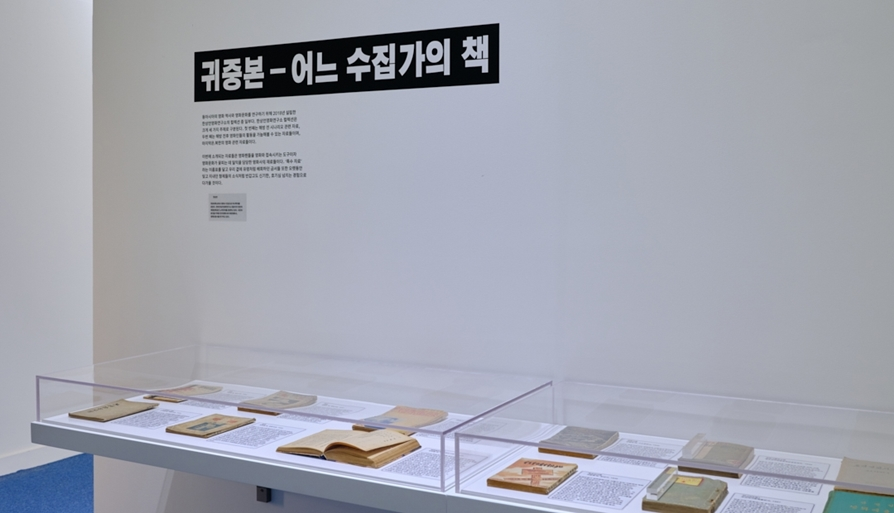
동아시아의 영화 역사와 영화문화를 연구하기 위해 2018년 설립한 한상언영화연구소에는 다수의 영화 관련 잡지, 서적, 포스터, 전단 등이 수집되어 있다. 이번 전시를 통해 소개되는 한상언영화연구소 컬렉션은 크게 세 가지 주제로 구분된다. 첫 번째는 해방 전 시나리오 관련 자료, 두 번째는 해방 전후 영화인들의 활동을 가늠해볼 수 있는 자료들, 그리고 마지막은 북한의 영화 관련 자료들이다.
이번에 소개되는 자료들은 영화팬들을 영화와 접속시키는 도구이자 영화문화가 꽃피는 데 일익을 담당한 영화사의 재료들이다. 특수 자료라는 이름표를 달고 우리 곁에 유령처럼 배회하던 금서들 또한 오랫동안 잊고 지내던 형제들의 소식처럼 반갑고도 신기한, 호기심 넘치는 경험으로 다가올 것이다.
부록 - 책이 장면이 될 때
김태양
비디오, 10분 7초, 2024
비디오 에세이를 편집하면서 새삼스레 느낀 건 90년대, 2000년대엔 장르를 떠나 서점, 헌책방이 영화의 주요 배경으로 자주 등장한다는 것이었다. 그 시절의 문학과 영화가 사람들의 삶에 어떻게 녹아 있었는지 엿볼 수 있는 지점이었다. 제자리에서 그 자리를 지키는 책과 쉴 새 없이 움직이는 영화. 그것은 어지러웠던 그 시대를 비추는 한 조각 빛이 아니었을까 생각해 본다.
영화문고 Film Bookshop
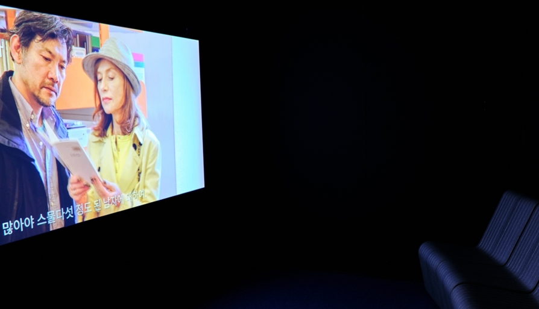
현재 출판 유통되는 영화 서적 및 매거진 약 300여 종을 열람할 수 있는 팝업 서점이다. 전시 영화문고는 전시와 팝업 서점의 경계를 두지 않고 전시 관람은 물론 열린 서점으로서의 기능을 함으로써 관람객들이 자유롭게 과거와 현재의 영화 책을 읽고 즐길 수 있는 공간이다.